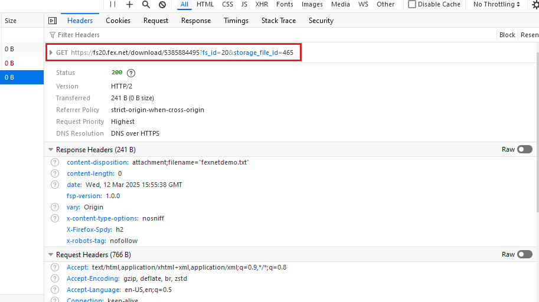
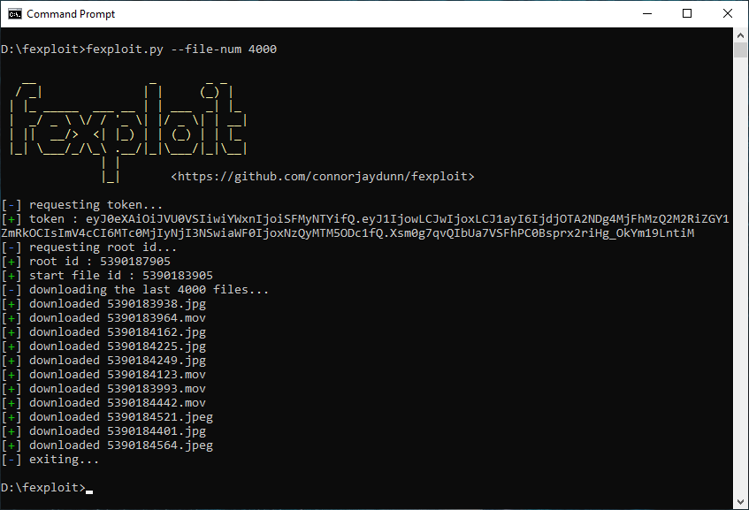

fexploit: Unauthorised FEX.NET Downloads
FEX.NET
FEX.NET, hereafter referred to as “FexNet,” is a cloud storage and file transfer service based in Ukraine, offering users the ability to store and share files online. FexNet shares many similarities with typical file-sharing platforms, it provides users with the option to create accounts, purchase storage space, and upload files for a specified duration. Like its competitors, FexNet also offers security features to protect users’ files. However, this blog post will focus on the security aspects of the platform, which, in reality, provide little to no protection at all in majority of cases.
NOTE: While FexNet offers a range of services beyond file sharing, this post will focus solely on its file-sharing capabilities.
Protection
When a user uploads a file to FexNet, they are presented with a unique key that allows them to retrieve the file from the FexNet server. Additionally, users have the option to share this key with another device or individual, granting them access to the file on FexNet. This approach is common among most file-sharing services (e.g., LimeWire, gofileio), balancing user security with the ability to easily share files with others.
It is important to note that the above is true if and only if the file in question has a key accociated with it. Otherwise, the only way to download said file would be to log into the owner’s account directly, or steal their JWT auth token.
Security
The keys produced by FexNet possess the following properties:
(1) 7 characters in length.
(2) a-z and 0-9.
(3) Generated by a secure pseudorandom number generator.
I will now cover some of the common approaches to “attacking” the keys:
Brute-Force Approach
The most naive attack would be to simply guess. Since we have 36 possibilities per character (a-z, 0-9), and there are 7 characters in total, we find that the key space is 36^7 = 78,364,164,096 in size. So, if the claims on FexNet’s file count are true, then we have approximately a 4,000,000,000/78,364,164,096 ~ 5.1% chance in guessing an occupied key. However, many keys are likely made invalid once the file expiration date is reached, so 5.1% can be considered an upper bound. Furthermore, one is likely to become rate-limited if they attempt to send thousands of HTTP requests, attempting to guess valid keys, so brute-force is not feasible.
Statistical Approach
Consider the string S, the combination of 100 keys (700 characters):
S = ern5ctsbnbmp6y5eztscyxppz1kc4dpeam4vk1vzztkblmcx2ktzk21sr84tzdx92zbatzssn1oc7n4mrlvsa9xxmm6a27la9rxv4bz0k60pbforn1odn4mn9bzb0pyxbolvxoas2pk5t0o4xsynrzpba69b6dz4ycpnep8vey4yfmslrbxrdss3bkryt5rrvcccxmcztl88lp7adtm3tccs0y3ofv2lllfeon8doxln0s53mpmozpxksn7c1em9yenynkn1ayll9xmfctszn9vyxv4ky7pndmkabxpotmd1dcaeckfdftrep1xafxyrxfss4o7sfa1fl1lmnbstlvet55sscalolo2psdc2p50r3zylnsoarz2nxad8s0fkskccfbs3vasxlavmb5fydnny3yzfssryf4ee5px1dsdxvkbabxbcvofr5f41exbrekamfllx7c9klyenyrcv9dp47dofnva4ftndsvr6sscypzy8rkkcovbctyly7dplbmsxyefnrff0czsrmbsaokxelrzyemmly957evmptmmy3a0svyecxa7dsy9zlobb4noslddkb8odsrxatny4t7szkmetkf2lt9tnctrvmo7kk5dpkt1xvfmokcsfazba5ldpvmzxznb82x1cylv27tkkn3ry1nfrxlspxzexze5tfymf0lyxp65eovpv
The entropy of S is ~ 4.7 and since we are working with 36 possibilities for each character (a-z, 0-9), the maximum entropy per character is log(36) ~ 5.17 bits (unless stated otherwise, log(x) is base 2). Therefore, we may safely assume property 3 is true, and there are no pattern(s) or weaknesses in how the keys are generated. This renders out the possibility of any attacks based on flaws in the key generation.
The Exploit
At first glance, the keys appear secure and resistant to practical attacks, implying that each associated file is also safe. Surprisingly, this is not the case. Rather than linking each file directly to its corresponding key, FexNet assigns each file an identification number, which is simply the total number of uploaded files plus one. The secure key merely directs the user to this file id.
This flaw becomes evident when examining the URL used to retrieve a file during download:

If it’s unclear from the image, the file is hosted at:
https://fs20.fex.net/downloads/5385884495?fs_id=20&storage_file_id=465
The URL structure may vary slightly—specifically the fs2 and fs_id parameters—but these differences appear to be related to load balancing. Regardless, as long as the file identification number (soon to be explained) remains the same, the endpoint returns the same file. Interestingly, storage_file_id also has no apparent effect on file retrieval. What is important is the first numerical sequence, 5385884495 in our case, which serves as the file’s identification number. As mentioned earlier, this number seems to correspond to the total file count incremented by one.
Note: I can’t guarantee 100% that what I’ve stated above is true. But after analysing API responses, the identifier appears as “anon_upload_root_id” and “id”, so my theory shouldn’t be far from the truth.
Armed with this knowledge, you should realize that simply incrementing or decrementing the file identification number allows access to another user’s file—one that should have been protected by a secure key. And you would be correct in doing so. However, as mentioned in previous sections, not every file is accessible. Some are still guarded as the registered user never generated a key, expired, or have a password associated with them. But every file that has a key for sharing, and no password, is vulnerable.
fexploit
fexploit is a python program, more like a proof-of-concept (PoC), I wrote which takes advantage of the flaw explained above. It will use FexNet’s API to request a valid authentification token, calculate the current file count, and attempt to download n files back.

The source code for fexploit can be found on github here.
Timeline
As of March 18, 2025, FexNet has either not read my report or does not consider this issue significant enough to patch. Therefore, I have decided to create this blog and release my proof-of-concept (PoC) tool publicly.
- 06/03/2025: Vulnerability Discovered
- 08/03/2025: Vulnerability Disclosure
- ??/??/????: Vulnerability Fixed